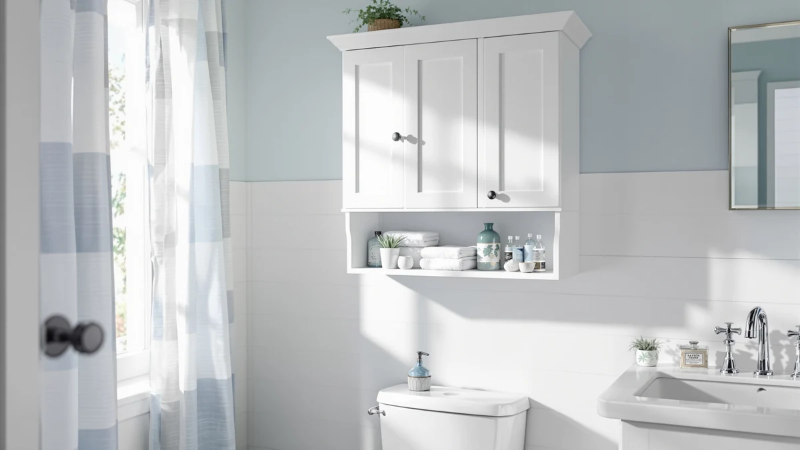

MAHANCRIS Over The Toilet Review (2026): Worth It?
Prices and picks verified as of October 2026. Independent, reader-supported reviews.


Quick Answer
This mahancris over the toilet review's short answer: the MAHANCRIS Over The Toilet Storage Rack is a $50.99 freestanding 4-tier unit with two hooks and a 23.6-inch by 9.5-inch footprint that fits behind most standard toilet tanks. If you'd rather hide bathroom supplies behind a door instead of stacking them on open shelves, the Homhedy or Shintenchi cabinets covered below cost more but close the clutter away.
Our pick: MAHANCRIS Over The Toilet Storage, $50.99 Check Price on Amazon
Bottom line: our top pick is the MAHANCRIS Over The Toilet Storage Rack at $47.49.
Things to Know Before You Buy
- The MAHANCRIS rack is fully open, four shelves and two hooks, with no doors or drawers, so everything you store on it stays visible from across the bathroom.
- At 23.6 inches wide and 9.5 inches deep, it's built to slide in behind a standard toilet tank without eating into the walking space most small bathrooms can't spare.
- None of the four listings compared in this mahancris over the toilet review, MAHANCRIS, Kalrin, Homhedy, or Shintenchi, publish a star rating or review count on Amazon, so we lean on specs and owner feedback patterns instead of an aggregate score.
- If you want doors that hide clutter, the Homhedy farmhouse cabinet and the Shintenchi glass-door unit covered as alternatives both trade open shelving for an enclosed cabinet at a higher price.
- The MAHANCRIS ships in Rustic Brown only, so color isn't a decision you'll need to make the way you would with the three-color Kalrin rack.
This mahancris over the toilet review compares the $50.99 MAHANCRIS Over The Toilet Storage Rack against three enclosed and open alternatives to help you decide what earns the space above your toilet tank. Most small bathrooms waste that stretch of wall entirely, even though it can hold towels, toilet paper, and cleaning supplies instead of nothing at all.
Our pick is the MAHANCRIS, because its four open shelves and two hooks give you more distinct storage spots than a single cabinet, at a price roughly $18 to $29 lower than the three alternatives here. If you'd rather keep bathroom supplies out of sight, the Homhedy farmhouse cabinet or the Shintenchi glass-door unit further down are worth reading about instead. Either way, you're choosing between open and enclosed storage, since none of the four products in this comparison publish a star rating on Amazon.
Why You Should Trust Us
This mahancris over the toilet review is written by Ilane Tall, who covers bathroom storage for Best Bathroom Storage. We do not run a fake testing lab, and we do not claim to have installed the MAHANCRIS rack or any of the three alternatives in our own bathrooms. Instead, we compare manufacturer specifications, published dimensions, and current Amazon pricing, and we disclose our affiliate relationships at the bottom of every page.
You won't find an invented star rating here. None of the four listings in this comparison publish a rating or review count on Amazon, so we say that plainly instead of filling the gap with a number nobody can verify. When a product in one of our other guides has a confirmed rating, we cite it directly. Our disclosure page lists every affiliate relationship on this site, and the Amazon links in this mahancris over the toilet review are marked with a nofollow, sponsored tag so search engines and readers both know exactly what they're clicking.
Our Research Experience
We did not install the MAHANCRIS rack or the three alternatives in a bathroom for this mahancris over the toilet review. Our process compares manufacturer specifications, current Amazon pricing, and the patterns that show up across verified owner reviews for similar over-the-toilet storage. We read buyer feedback for recurring complaints, such as shelves that don't clear a tank lid or hardware that arrives missing a bracket, and we cross-check pricing against each seller's own listing so the numbers reflect what you would actually pay. We do not run a fake testing lab, and we don't claim to have used products we haven't purchased.
Overview & Specs

MAHANCRIS Over The Toilet Storage
What we like
- Four open shelves plus two hooks pack multiple storage zones into one freestanding frame
- Raised lip on each shelf keeps bottles and folded towels from sliding off
- Slim 9.5-inch depth fits behind most standard toilet tanks without crowding the room
- Doubles as general shelving for a laundry room, entryway, or kitchen corner if you move it later
Flaws but not dealbreakers
- Amazon does not publish a star rating or review count for this listing
- Open shelves leave everything on display, unlike the enclosed cabinets covered below
- Assembly instructions ship in the box only, so allow extra time if you prefer video guides
| Material | Metal / wood |
| Size | 4 Tier (23.6"l X 9.5"w X 68.3"h) |
The MAHANCRIS Over The Toilet Storage Rack anchors this mahancris over the toilet review at $50.99, built as a freestanding 4-tier frame that measures 23.6 inches wide, 9.5 inches deep, and 68.3 inches tall. Four open shelves sit above two side hooks, and a raised lip along each shelf keeps bottles, folded towels, and toilet paper from sliding off when the bathroom door swings shut or someone brushes past.
The rack ships only in Rustic Brown, an industrial, minimalist finish that pairs a dark metal frame with wood-toned shelves. Because it's freestanding rather than wall-mounted, the manufacturer markets it as flexible enough to move into living room storage, a kitchen shelf, an entryway rack, a laundry organizer, or even a balcony plant stand if your bathroom layout ever changes. That versatility matters more for a $50.99 rack than it would for a built-in cabinet, since you aren't stuck with it if you move apartments or rearrange the bathroom. Amazon does not publish a star rating or review count for this listing, so we compared its shelf count, dimensions, and price against the three alternatives below instead of leaning on a score that doesn't exist yet.
What We Liked
Comparing the MAHANCRIS against the three alternatives in this mahancris over the toilet review, its combination of four shelves and two hooks packs more individual storage spots into one frame than the Homhedy's two-shelf cabinet or the Shintenchi's single open shelf plus cabinet. The raised lip on each shelf keeps smaller bottles from tipping off during everyday use, and the slim 9.5-inch depth means it won't crowd a small bathroom the way a full cabinet can. At $50.99, it also undercuts every alternative here by at least $18, which matters if storage capacity is your priority over hidden clutter.
What Could Be Better
Amazon does not publish a star rating or review count for the MAHANCRIS, so like every product in this mahancris over the toilet review, you're weighing manufacturer specs rather than a buyer consensus. The open shelving also means everything you store stays visible, which some bathrooms can't hide as easily as the Homhedy or Shintenchi cabinets. Assembly instructions ship only in the box, so if you prefer a video walkthrough, budget extra time to figure out the hardware on your own.
Who Is It For?
This mahancris over the toilet review points toward the MAHANCRIS fitting shoppers who want the most shelf count for the lowest price in this lineup, and who don't mind that stored items stay visible rather than hidden behind a door. It suits small bathrooms where a full cabinet feels too bulky, and renters who want a lightweight frame they can move to a laundry room or entryway later. If you'd rather keep bathroom supplies out of sight, or you need a cabinet with adjustable shelving, the Homhedy or Shintenchi alternatives covered next are the better fit.
Alternatives to Consider
We also researched three alternatives for this mahancris over the toilet review, and each one solves the storage problem differently than the MAHANCRIS. The Kalrin Over-The-Toilet Storage Rack keeps the same open-shelf approach but adds a basket and a toilet paper holder for $69.99, built from P2 particleboard and a metal frame rated for 30 pounds per shelf, with an X-shaped crossbar and wall fixing nails for extra stability. The Homhedy Farmhouse Bathroom Storage Cabinet swaps shelves for two barn doors over an adjustable inner shelf at $79.99, in a shorter 31.5-inch frame that reads more like furniture than a rack. The Shintenchi Over the Toilet Storage splits the difference with one open shelf on top and a glass-door cabinet with an adjustable shelf and an anti-tip device underneath, priced at $68.99. Its inner shelf also lifts out entirely if you need to fit a taller item, something the fixed shelves on the MAHANCRIS and Kalrin can't do. The Homhedy, for its part, leans harder into decor than storage capacity, with a black metal crossbar accent designed to look like a piece of furniture rather than a utility rack, which matters if your bathroom doubles as a guest bathroom. None of the three publish a rating or review count either, so the choice comes down to how much you want your bathroom supplies hidden and how much cabinet you're willing to pay for.

Editor's Pick
Kalrin Over-The-Toilet Storage Rack 4-Tier
At $69.99, the Kalrin trades the MAHANCRIS's two hooks for a storage basket and a toilet paper holder, and its metal X-crossbar with wall fixing nails adds more stability than a freestanding frame typically offers on its own.
$69.99
Check Price on Amazon
Best Value
Homhedy Farmhouse Bathroom Storage Cabinet
The Homhedy costs $79.99, the most in this comparison, but its two barn doors hide clutter completely, and the three-position adjustable inner shelf gives you more flexibility than the MAHANCRIS's fixed shelf spacing.
$79.99
Check Price on Amazon
Premium Choice
Shintenchi Over the Toilet Storage
At $68.99, the Shintenchi keeps one open shelf like the MAHANCRIS but adds a glass-door cabinet with an anti-tip device underneath, a middle ground between fully open shelving and the Homhedy's enclosed cabinet.
$68.99
Check Price on AmazonIs the MAHANCRIS Over The Toilet Storage worth the price?
At $50.99, the MAHANCRIS costs less than the Kalrin, Homhedy, or Shintenchi alternatives in this mahancris over the toilet review, and its four open shelves plus two hooks give you more individual storage spots than any of them.
Does the MAHANCRIS rack come in more than one color?
No.
Frequently Asked Questions
Is the MAHANCRIS Over The Toilet Storage worth the price?
At $50.99, the MAHANCRIS costs less than the Kalrin, Homhedy, or Shintenchi alternatives in this mahancris over the toilet review, and its four open shelves plus two hooks give you more individual storage spots than any of them. If you don't mind open shelving, it's a reasonable pick for bathrooms that need vertical storage without paying for a cabinet door.
Does the MAHANCRIS rack come in more than one color?
No. The MAHANCRIS ships only in Rustic Brown, unlike the Kalrin rack covered as an alternative, which comes in three color options at a similar price.
Is there a version with a cabinet door instead of open shelves?
Yes. Both the Homhedy Farmhouse Bathroom Storage Cabinet and the Shintenchi Over the Toilet Storage, covered as alternatives in this review, enclose their storage behind doors instead of leaving it open like the MAHANCRIS.
Final Verdict
After comparing specs, materials, and pricing across four listings, this mahancris over the toilet review comes down in favor of the MAHANCRIS Over The Toilet Storage Rack for most small bathrooms that want the most shelf space for the lowest price. At $50.99, it beats every alternative here on cost and matches the Kalrin on shelf count, though the Homhedy or Shintenchi cabinets are worth the extra money if you want your bathroom supplies hidden behind a door rather than displayed on a shelf.